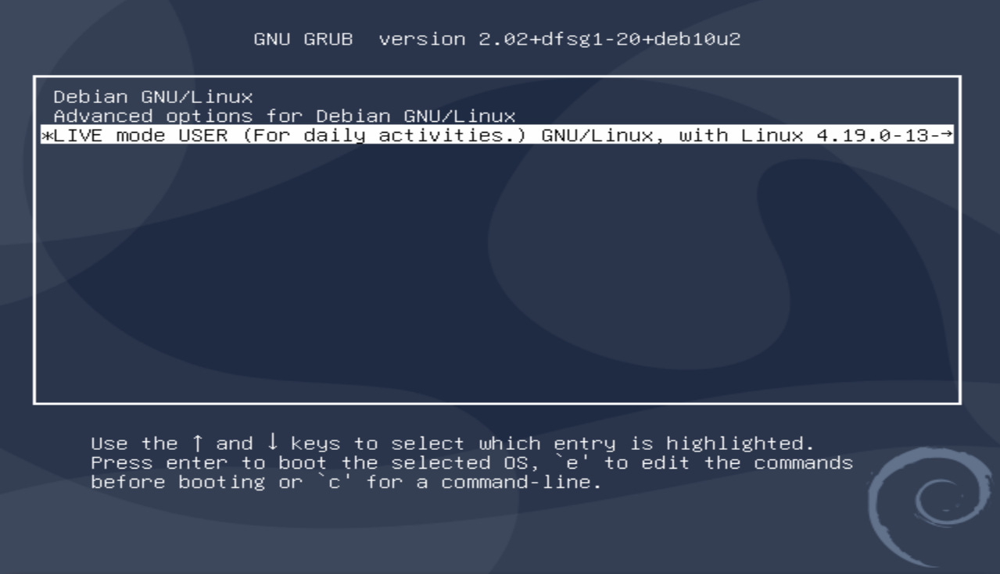
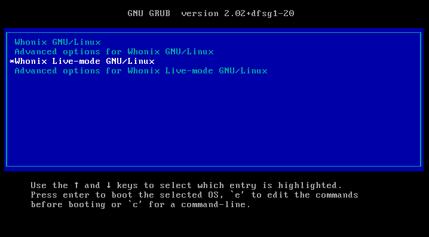

We believe security software like Kicksecure needs to remain Open Source and independent. Would you help sustain and grow the project? Learn more about our 11 year success story and maybe DONATE!
Distribution MorphingAdvanced DocumentationgrubPrevious page: Distribution MorphingIndex page: Advanced DocumentationNext page: grubgrub-live - boot an existing Host OS or VM into Live Mode

The grub-live package offers an additional "LIVE mode" boot menu entry for the GNU GRUB boot loader.
This package is potentially compatible with many Linux distributions such as Debian. In Kicksecure and Whonix®, it is installed by default. Grub-live can be applied to a host operating system (OS) as well as to a guest OS on a virtual machine.



Context
This wiki page documents grub-live mostly as a standalone software
package outside the context of Kicksecure. Any elements related to
Kicksecure are clearly marked as such
("Kicksecure feature").
Compatibility
grub-live is compatible and tested with Debian, Kicksecure, and Whonix. In Kicksecure and Whonix, it is installed by default. It should also run without any problems on Ubuntu and other Linux distributions that implement Debian's dracut. However, due to little user adoption and testing at this point in time, grub-live for those distributions is still labeled untested.
Installation / Getting started
The grub-live package is hosted under the grub-live GitHub repository. There you will also find the installation guide.
After the installation, you can instantly use the Live Mode in your operating system. Simply boot or reboot your system and choose the new "LIVE mode" entry in the boot menu. For Kicksecure specifically, read: Detailed documentation for using the live mode for Kicksecure.
Set grub-live as Default in GRUB boot menu
Optional.
If you have installed grub-live and want the "LIVE mode" entry to be the default selected entry in your GRUB menu, please follow the instructions below. Be aware, however, that due to little user adoption and testing, this option is still labeled untested.
1. Do a grub-live package installation check
By default, the grub-live package is installed in
Kicksecure. If you boot your system and a boot menu entry "LIVE mode" is
already available, then grub-live is already installed.
Alternatively, you can make sure the grub-live
package is installed. The following command can be used to check on
the command line if the package is already installed by default.
dpkg -l | grep grub-live
2. Set LIVE mode as the default boot menu entry
There are two ways to accomplish this. Choose one of these options:
Option (A) - symlink method
- Advantage: This is easier because updates to grub-live will be automatically applied.
- Disadvantage: There will be a duplicate live boot menu entry.
- Copy and execute the following command:
sudo ln -s /etc/grub.d/10_20_linux_live /etc/grub.d/09_linux_live
Option (B) - moving method
- Advantage: No duplicate live boot menu entry.
- Disadvantage: Updates to grub-live will NOT be automatically applied.
- Copy and execute the following command:
sudo mv /etc/grub.d/10_20_linux_live /etc/grub.d/09_linux_live
3. Re-generate GRUB boot menu
The GRUB boot menu needs to be regenerated for the changes to be applied. Copy and execute the following command:
sudo update-grub
4. DONE
The process of changing from "live mode opt-in through GRUB boot menu" to "live boot by default" has been completed.
5. Updates
If in step 2, "option (B)" was chosen, then this process might need to be repeated from time to time if there have been updates to GRUB or to your system. The need to repeat this process from step 1 to step 4 will be indicated as soon as the "LIVE mode" entry is no longer the default entry in the GRUB boot menu.
If in step 2, "option (A)" was chosen, then this step is not needed. Updates will be applied automatically.
Get GRUB to remember your last choice (e.g., Live mode)
Optional.
If you do not want to set Live Mode as your permanent default boot entry but still want the comfort of having GRUB remember your last choice, e.g., "Live mode," then follow these instructions. [1]
1. Open file
/etc/default/grub.d/50_user.conf in an editor with
administrative ("root")
rights.
1 Select your platform.

2 Notes.
- Sudoedit guidance: See Open File
with Root Rights for details on why using
sudoeditimproves security and how to use it. - Editor requirement: Close Featherpad (or the chosen text
editor) before running the
sudoeditcommand.
3 Open the file with root rights.
sudoedit /etc/default/grub.d/50_user.conf

2 Notes.
- Sudoedit guidance: See Open File
with Root Rights for details on why using
sudoeditimproves security and how to use it. - Editor requirement: Close Featherpad (or the chosen text
editor) before running the
sudoeditcommand. - Template requirement: When using Kicksecure-Qubes, this must be done inside the Template.
3 Open the file with root rights.
sudoedit /etc/default/grub.d/50_user.conf
4 Notes.
- Shut down Template: After applying this change, shut down the Template.
- Restart App Qubes: All App Qubes based on the Template need to be restarted if they were already running.
- Qubes persistence: See also Qubes Persistence
- General procedure: This is a general procedure required for Qubes and is unspecific to Kicksecure-Qubes.

2 Notes.
- Example only: This is just an example. Other tools could achieve the same goal.
- Troubleshooting and alternatives: If this example does not work for you, or if you are not using Kicksecure, please refer to Open File with Root Rights.
3 Open the file with root rights.
sudoedit /etc/default/grub.d/50_user.conf
2. Now add these two lines to this file: GRUB_DEFAULT=saved GRUB_SAVEDEFAULT=true
3. Finally, execute this command: sudo update-grub
4. Done.
Your boot menu now remembers your last choice.
Alternative to grub-live
As an alternative to grub-live, it is also possible to automatically
detect if the disk is set to read-only and enable live mode
automatically using the ro-mode-init package. Read VM Live Mode -
Alternative ro-mode-init Configuration for further instructions.
ro-mode-init is currently less tested than
grub-live.
Comparison between grub-live and Tails
Tails is its own operating system, whereas grub-live is a package enabling Live Mode on different Linux distributions. The following table shows the advantages and disadvantages of grub-live in regard to Tails. It should be noted, however, that while Tails is optimized for Live mode, grub-live is vastly more compatible with other systems.
Aspect |
grub-live on the host [2] / |
Tails DVD only |
Tails USB / DVD, with persistent USB |
Tails read-only medium and other devices with write capability unplugged [3] [4] |
|---|---|---|---|---|
Common [5] mode of operation |
Yes |
Yes |
Yes |
No [6] |
Amnesic / protects against disk modifications [7] |
Yes |
Yes |
Yes |
Yes |
Protects against malware persistence on hard drive after malware compromise |
No [8] |
No [8] |
No [8] |
Yes [8] |
Protects against firmware trojans after malware compromise |
No [8] |
No [8] |
No [8] |
No [8] |
Avoid writing to arbitrary (non-boot) host disks |
Yes |
Yes [9] |
Yes [9] |
Yes [9] |
Disables removable drives auto-mounting (Kicksecure feature) |
Yes [10] |
? [11] |
? [11] |
? [11] |
Disables swap |
Yes (Kicksecure feature) [12] |
Yes |
Yes |
Yes |
Disabled virtual machine shared folders |
Yes [13] |
? |
? |
? |
Wipe RAM on shutdown |
Yes, implemented in ram-wipe, not grub-live. (Kicksecure feature.) [14] |
Yes, but with limitations. [15] |
Yes, but with limitations. [15] |
Yes, but with limitations. [15] |
Wipe video RAM on shutdown |
No [16] |
No [17] |
No [17] |
No [17] |
Emergency shutdown on USB removal |
No [18] |
Yes |
Yes |
Yes |
Live Mode Usability [19] |
Good [20] |
Good [21] |
Good [21] |
Good [21] |
Live Mode Indicator Systray |
Unneeded |
Unneeded |
Unneeded |
|
Unified Amnesic User Experience |
Yes |
Yes |
Yes |
Yes |
Unified Amnesic + Anonymous User Experience |
Yes |
Yes |
Yes |
|
Easy standard ("everyday") upgrades [26] |
Yes |
? |
? |
? |
Release upgrades [27] possible anytime [26] |
Yes |
No [28] |
No [28] |
No [28] |
Live boot by default |
|
Yes |
Yes |
Yes |
Persistent boot by default |
|
No |
No |
No |
Full disk encryption compatibility |
Yes |
No |
No |
No |
Encrypted persistence supported |
Yes |
Yes [30] |
Yes [30] |
Yes [30] |
Security Considerations
How secure and reliable is any live mode?
Computers typically default to data persistence rather than amnesia. Coupled with widespread computer security vulnerabilities (see About Computer (In)Security), implementing a secure non-persistent system is challenging.
grub-live is relatively straightforward. It primarily
involves installing necessary dependencies and setting kernel parameters
(details in Implementation). However, the software it is based
on, such as dracut, mount, and
overlayfs, are complex. Sparse developer documentation in
this area makes this challenging. There is also an increased risk of
failures post Release
Upgrade or after installing new major versions of Kicksecure or
Debian, due to the generic nature
of the solution.
There is a potential risk that malware could remount a read-only disk as
read-write. While we are not aware of confirmed cases, theoretically,
even legitimate software could inadvertently perform such actions. To
mitigate this risk, it's advisable to use grub-live in conjunction
with
- USER session; and/or
- physical read-only mode for hard drives, where feasible. See read-only.
Using grub-live on the host operating system, combined with virtual machines (VMs), is a safer configuration. In this setup, any disk remounting as read-write within a VM would be negated upon rebooting the host. VMs, in this context, are unaware of the host's live mode status and cannot directly alter it.
Would using a read-only base system image (for example an ISO) be safer? Often yes. especially if the image integrity is verified and the storage holding it cannot be modified while running. It seems unlikely that such an image would be inadvertently remounted as read-write, unless targeted specifically by malware.
Tools like growisofs can append data to an ISO, but it's
more complex than a simple remount command. Even without
growisofs, malware could potentially repack and rewrite
an ISO, but it is an even more complicated process. Not something that
can happen by accident.
What about write-once media, like a DVD-R (not DVD-RW)? This is indeed a safer option, but less practical. It requires burning the DVD and then booting from it. Such devices are not popular anymore.
Combining physical write protection switches with grub-live would further enhance security. However, even this is not foolproof due to potential hardware vulnerabilities or defects. (See Write Protection.) Thus, it should be considered an additional layer of defense rather than a complete solution.
Reflecting on these aspects, we can categorize security configurations from least to most secure, as follows:
Notes:
- This list, created in December 2025, might have minor inaccuracies but generally represents the correct security hierarchy.
- Read-only filesystem on HDD: For example, booting a read-only image stored on HDD (e.g., via a bootloader loopback) is possible, but out of scope here.
Note: "Booted from Read-Only Filesystem" refers to the base OS image. Live mode typically still provides a writable RAM overlay so the running system can create/modify files without persisting them to disk.
# |
Boot Context |
Booted from Read-Only Filesystem |
Boot Medium |
Persistent Storage Enforced Read-Only |
Uses VMs |
Physical Write Protection |
Other Storage Not Accessible |
Security Level |
|---|---|---|---|---|---|---|---|---|
1 |
VM |
No |
HDD |
No |
Yes |
No |
No |
* |
2 |
VM |
No |
HDD |
Yes |
Yes |
No |
No |
** |
3 |
VM |
Yes |
CD/DVD |
Yes |
Yes |
No |
Yes |
*** |
4 |
Host |
No |
HDD |
No |
No |
No |
No |
** |
5 |
Host |
No |
HDD |
No |
Yes |
No |
No |
*** |
6 |
Host |
No |
HDD |
Yes |
No |
No |
No |
*** |
7 |
Host |
No |
HDD |
Yes |
Yes |
No |
No |
**** |
8 |
Host |
Yes |
HDD |
Yes |
No |
No |
No |
**** |
9 |
Host |
Yes |
HDD |
Yes |
Yes |
No |
No |
***** |
10 |
Host |
Yes |
HDD |
Yes |
Yes |
No |
No |
****** |
11 |
Host |
Yes |
HDD |
Yes |
Yes |
Yes |
No |
******* |
12 |
Host |
Yes |
DVD-RW |
Yes |
No |
Yes |
No |
******* |
13 |
Host |
Yes |
DVD-RW |
Yes |
Yes |
Yes |
No |
******* |
14 |
Host |
Yes |
DVD-R |
Yes |
No |
Yes |
No |
******** |
15 |
Host |
Yes |
DVD-R |
Yes |
Yes |
Yes |
No |
******** |
16 |
Host |
Yes |
DVD-R |
Yes |
Yes |
Yes |
Yes |
********* ("most secure") |
Additional steps users can take to improve the security of live mode:
- Avoiding the installation of additional software, especially more
complex software that uses mount or loop devices or breaks the live
indicator, such as, for example,
snapd. - Prevention of Malware Sniffing the Root Password, because remount read-write requires root.
See also [Broken-ExtLink--no-url-was-provided].
In summary, while striving for maximum security, absolute guarantees are unattainable. Users seeking higher data amnesia assurances should consider becoming developers or auditors, or sponsoring focused development and review in the realm of anti-forensics, including the development of comprehensive automated testing frameworks.
Remount Disk as Read-Write after booting into Live Mode
This chapter is more of developer documentation, proof of concept, and curiosity rather than something that users should do.
1. Create a mount folder /mnt/disk.
sudo mkdir /mnt/disk
2. Mount.
Note: /dev/sda3 applies to VirtualBox VMs. It needs to
be replaced with the actual hard drive device name.
sudo mount /dev/sda3 /mnt/disk
3. Remount as read-write.
sudo mount -o remount,rw /dev/sda3 /mnt/disk
4. Make persistent modifications.
For example, create a file /home/test-file.
touch /mnt/disk/home/test-file
5. When done, unmount.
sudo umount /mnt/disk
6. Remove the mount point.
Optional.
sudo rmdir /mnt/disk
7. Done.
The process has been completed.
8. Extra.
Even the root of the filesystem ("/") can be remounted
read-write.
sudo mount -o remount,rw /dev/sda3 /
Questions and answers:
- Is this a security issue? Yes.
- Is this issue specific to, or caused by, grub-live or Kicksecure? No, unspecific to Kicksecure.
- Is this issue reproducible on other live systems, i.e., without grub-live or Kicksecure being involved? Yes.
- Are similar live systems also affected? Yes, see Security Considerations.
- What can users do to improve their security? See the same link as above.
Troubleshooting
Here are some problems you might encounter and their possible solutions.
Live Mode Without grub-live
Platform specific.
- Kicksecure: In recent versions of Kicksecure,
dracutis installed by default. To boot into live mode without usinggrub-live, simply add the rootovl kernel parameter. Instructions for adding kernel parameters can be found on the grub wiki page.- Note that booting with the
rootovl kernel parameter
will only mount the root filesystem live. If you have other filesystems
that are mounted by default when the system starts, such as
/homeon a separate partition, those filesystems will NOT be mounted live when doing this.grub-liveremedies this via alive-hardenerscript that detects additional persistent mountpoints and remounts them read-only with a live writable overlay.
- Note that booting with the
rootovl kernel parameter
will only mount the root filesystem live. If you have other filesystems
that are mounted by default when the system starts, such as
- Kicksecure for Qubes: Refer to the related Qubes feature request Implement live boot by porting grub-live to Qubes - amnesia / non-persistent boot / anti-forensics
It is recommended to Functionality Test of Live mode to verify non-persistence.
Missing grub-live boot menu entry
Please run the following commands for debugging or information gathering and post them when creating any support requests.
1. /etc/grub.d/10_20_linux_live file existence.
ls -la /etc/grub.d/10_20_linux_live
2. /etc/grub.d/10_20_linux_live file contents.
Please check your local file
/etc/grub.d/10_20_linux_live
to ensure it looks exactly the same as /etc/grub.d/10_20_linux_live
on GitHub. This will verify that you have the latest version of the
grub-live package. Note that the stable version might look
slightly different from the developer's or tester's version on
GitHub.
cat /etc/grub.d/10_20_linux_live
3. dracut package version number.
dpkg-query -W -f='${db:Status-Status}' dracut
4. dist-base-files package version
number.
dpkg -l | grep dist-base-files
5. grub-live package version
number.
dpkg -l | grep grub-live
6. /boot/grub/grub.cfg file contents.
sudo cat /boot/grub/grub.cfg
7. Optional: Compare /boot/grub/grub.cfg with sample grub.cfg.
related forums tips:
Live Check Indicator Systray Issues
The live mode is indicated by a Live Check Systray icon. It can happen that this icon has issues. If so, here is what you can do.
First of all, this is not an indication of compromise by malware. The real issue is as simple as: the Live Check Systray is broken.
1. Is live-mode.sh showing an
error?
bash -x /usr/libexec/helper-scripts/live-mode.sh
2. Is get_writable_fs_lists.sh showing
an error?
bash -x /usr/libexec/helper-scripts/get_writable_fs_lists.sh
3. Try lsblk.
If the above method does not work, try also this:
sudo /bin/lsblk
4. Kernel parameter check.
Please check kernel parameters after booting into live mode.
If using dracut (default in newer versions):
cat -- /proc/cmdline | grep --color -- rootovl
If using initramfs-tools (old build versions):
cat -- /proc/cmdline | grep --color -- boot=live
If not booting into live mode, these kernel parameters should not be there.
5. Bug report.
If you are still having issues, you can report a bug with the output from the commands included above.
dracut
Optional.
Changing from initramfs-tools to dracut is optional and can cause dracut issues, unbootable system. See dracut.
Developer Information
Users can skip this chapter and below.
Implementation
The grub-live implementation combines the dracut module
90overlay-root with a script
/usr/libexec/grub-live/live-hardener to mount all possible
writable filesystems read-only, with a writable RAM-based overlay to
allow normal system operation without persistence.
90overlay-root and live-hardener are enabled
when kernel parameter rootovl is set.
90overlay-root is only available in the Debian fork of
dracut.
- dracut module source file: /usr/lib/dracut/modules.d/90overlay-root/overlay-mount.sh
- main file:
 Kicksecure/grub-live
Kicksecure/grub-live 90overlay-rootvs90dmsquash-live- https://github.com/dracutdevs/dracut/issues/1565
Simplified Summary
The first main source file is this one:
 Kicksecure/grub-live
The most relevant parts...
Kicksecure/grub-live
The most relevant parts...
(Kicksecure at the time of writing uses the initramfs generator "dracut" by default.)
## dracut support
- https://www.kicksecure.com/wiki/Grub-live#Developer_Information
- using Debian forked upstream module 90overlay-root (tested)
GRUB_CMDLINE_LINUX="$GRUB_CMDLINE_LINUX rootovl"
- using dracut upstream module 90overlayfs (untested)
- GRUB_CMDLINE_LINUX="$GRUB_CMDLINE_LINUX rd.live.overlay.overlayfs=1 rd.live.overlay.readonly=1"
The essence of what grub-live does is provide a
convenient way (the GRUB boot menu entry) to easily set the kernel
parameter rootovl, which is a feature provided by Debian's
forked version of dracut, module 90overlay-root.
In the future on Debian 14 / forky, grub-live will probably use
dracut upstream module 90overlayfs instead. See also Development.
These dracut modules in turn make use of Linux kernel features.
The other primary source file is this one: live-hardener.
This script detects writable filesystems and remounts most of them
read-only, then adds a live overlay on top. This is similar to what
Debian's dracut's 90overlay-root does for the root
filesystem, but applies to most other writable filesystems on the
system, thus reducing persistence even in more complex setups.
live-hardener does not remount writable filesystems if
both of the following conditions are met:
- The filesystem is mounted to
/media,/mnt, or a subdirectory thereof, and - The drive containing the filesystem is detected to be a removable
drive (
/sys/class/block/DRIVE_ID/removableis equal to1).
live-hardener is not always able to mount a writable
RAM-based overlay on top of all filesystems, as some filesystems are not
compatible with the overlayfs kernel feature. These
filesystems are simply remounted read-only, without providing a writable
overlay.
In summary, the most heavy lifting is done by the initramfs generator
dracut and the Linux kernel. grub-live only
implements usability (GRUB boot menu entry), documentation, and a more
thorough hardening mechanism for filesystems beyond the root
filesystem.
Development
Should port to 90overlayfs
rd.live.overlay.overlayfs=1 rd.live.overlay.readonly=1
on Debian 14 / forky. This has not been done during the Debian 13 / trixie based release cycle due to Debian dracut bug overlayfs module fails to mount an overlay over a BTRFS filesystem, breaking live boot.
While Debian did not merge overlayfs
with nfs for Debian bookworm the module might be updated in the next
major version of Debian as per usual as Debian receives newer
dracut versions from dracut upstream.
File Names
Legacy File Names
/etc/grub.d/11_linux_live has been renamed to
/etc/grub.d/10_20_linux_live.
Porting grub-live to other Linux Distributions
This is an informational chapter for developers. Users can skip this chapter.
Porting grub-live to other Linux Distributions might be
rather simple in comparison to other packages.
grub-live should already be compatible with any Debian
based distribution as mentioned on top of this wiki page. Testing is
very limited.
What grub-live technically in essence does:
- 1) The
grub-liveis mainly shipping three files:- GRUB config file
Kicksecure/grub-live
- live-hardener script
live-hardener. - systemd service
live-hardener.service.
- GRUB config file
- 2) Pull required dependencies in
Kicksecure/grub-live
- 3) Postinst runs: "
sudo update-grub"
Qubes support:
- Might be harder.
- That would require packaging
grub-livefor Fedora. - Or as a first step copying over the config files.
- https://github.com/QubesOS/qubes-issues/issues/1018
- https://github.com/QubesOS/qubes-issues/issues/4982
grub.cfg
For reference only.
/boot/grub/grub.cfg will be automatically created. (Auto-generated by sudo update-grub .) No manual user action required. Useful for comparison in case of debugging.
#
# DO NOT EDIT THIS FILE
#
# It is automatically generated by grub-mkconfig using templates
# from /etc/grub.d and settings from /etc/default/grub
#
### BEGIN /etc/grub.d/00_header ###
if [ -s $prefix/grubenv ]; then
set have_grubenv=true
load_env
fi
if [ "${next_entry}" ] ; then
set default="${next_entry}"
set next_entry=
save_env next_entry
set boot_once=true
else
set default="0"
fi
if [ x"${feature_menuentry_id}" = xy ]; then
menuentry_id_option="--id"
else
menuentry_id_option=""
fi
export menuentry_id_option
if [ "${prev_saved_entry}" ]; then
set saved_entry="${prev_saved_entry}"
save_env saved_entry
set prev_saved_entry=
save_env prev_saved_entry
set boot_once=true
fi
function savedefault {
if [ -z "${boot_once}" ]; then
saved_entry="${chosen}"
save_env saved_entry
fi
}
function load_video {
if [ x$feature_all_video_module = xy ]; then
insmod all_video
else
insmod efi_gop
insmod efi_uga
insmod ieee1275_fb
insmod vbe
insmod vga
insmod video_bochs
insmod video_cirrus
fi
}
if [ x$feature_default_font_path = xy ] ; then
font=unicode
else
insmod part_msdos
insmod btrfs
search --no-floppy --fs-uuid --set=root e727c741-7916-416a-a89b-6df8286415eb
font="/grub/unicode.pf2"
fi
if loadfont $font ; then
set gfxmode=1024x768
load_video
insmod gfxterm
set locale_dir=$prefix/locale
set lang=en_US
insmod gettext
fi
terminal_output gfxterm
insmod part_msdos
insmod btrfs
search --no-floppy --fs-uuid --set=root e727c741-7916-416a-a89b-6df8286415eb
insmod gfxmenu
loadfont ($root)/grub/themes/dist-common/inter-grub_regular_17.pf2
loadfont ($root)/grub/themes/dist-common/inter-grub_regular_20.pf2
loadfont ($root)/grub/themes/dist-common/terminus-grub_14.pf2
insmod png
set theme=($root)/grub/themes/kicksecure/theme-4x3.txt
export theme
if [ "${recordfail}" = 1 ] ; then
set timeout=30
else
if [ x$feature_timeout_style = xy ] ; then
set timeout_style=menu
set timeout=5
# Fallback normal timeout code in case the timeout_style feature is
# unavailable.
else
set timeout=5
fi
fi
### END /etc/grub.d/00_header ###
### BEGIN /etc/grub.d/05_debian_theme ###
set menu_color_normal=cyan/blue
set menu_color_highlight=white/blue
### END /etc/grub.d/05_debian_theme ###
### BEGIN /etc/grub.d/10_00_linux_dist ###
function gfxmode {
set gfxpayload="${1}"
}
set linux_gfx_mode=1024x768
export linux_gfx_mode
menuentry 'Kicksecure GNU/Linux' --class kicksecure --class gnu-linux --class gnu --class os $menuentry_id_option 'gnulinux-simple-f980020b-0f30-442d-b3ec-ab4c6c54fa9a' {
load_video
gfxmode $linux_gfx_mode
insmod gzio
if [ x$grub_platform = xxen ]; then insmod xzio; insmod lzopio; fi
insmod part_msdos
insmod btrfs
search --no-floppy --fs-uuid --set=root e727c741-7916-416a-a89b-6df8286415eb
echo 'Loading Linux 6.1.0-32-amd64 ...'
linux /vmlinuz-6.1.0-32-amd64 root=UUID=f980020b-0f30-442d-b3ec-ab4c6c54fa9a ro rootflags=subvol=@ mitigations=auto,nosmt nosmt=force spectre_v2=on spectre_bhi=on spec_store_bypass_disable=on ssbd=force-on l1tf=full,force mds=full,nosmt tsx=off tsx_async_abort=full,nosmt kvm.nx_huge_pages=force l1d_flush=on mmio_stale_data=full,nosmt retbleed=auto,nosmt gather_data_sampling=force reg_file_data_sampling=on slab_nomerge slab_debug=FZ init_on_alloc=1 init_on_free=1 page_alloc.shuffle=1 pti=on randomize_kstack_offset=on vsyscall=none debugfs=off kfence.sample_interval=100 vdso32=0 amd_iommu=force_isolation intel_iommu=on iommu=force iommu.passthrough=0 iommu.strict=1 efi=disable_early_pci_dma random.trust_bootloader=off random.trust_cpu=off extra_latent_entropy rd.luks.uuid=dc1f531b-eea8-47b0-86f2-a841d6d61a4e loglevel=0 quiet
echo 'Loading initial ramdisk ...'
initrd /initrd.img-6.1.0-32-amd64
}
### END /etc/grub.d/10_00_linux_dist ###
### BEGIN /etc/grub.d/10_20_linux_live ###
function gfxmode {
set gfxpayload="${1}"
}
set linux_gfx_mode=1024x768
export linux_gfx_mode
menuentry 'Kicksecure LIVE mode USER (For daily activities.) GNU/Linux' --class kicksecure --class gnu-linux --class gnu --class os $menuentry_id_option 'gnulinux-simple-f980020b-0f30-442d-b3ec-ab4c6c54fa9a' {
load_video
gfxmode $linux_gfx_mode
insmod gzio
if [ x$grub_platform = xxen ]; then insmod xzio; insmod lzopio; fi
insmod part_msdos
insmod btrfs
search --no-floppy --fs-uuid --set=root e727c741-7916-416a-a89b-6df8286415eb
echo 'Loading Linux 6.1.0-32-amd64 ...'
linux /vmlinuz-6.1.0-32-amd64 root=/dev/disk/by-uuid/f980020b-0f30-442d-b3ec-ab4c6c54fa9a ro rootflags=subvol=@ mitigations=auto,nosmt nosmt=force spectre_v2=on spectre_bhi=on spec_store_bypass_disable=on ssbd=force-on l1tf=full,force mds=full,nosmt tsx=off tsx_async_abort=full,nosmt kvm.nx_huge_pages=force l1d_flush=on mmio_stale_data=full,nosmt retbleed=auto,nosmt gather_data_sampling=force reg_file_data_sampling=on slab_nomerge slab_debug=FZ init_on_alloc=1 init_on_free=1 page_alloc.shuffle=1 pti=on randomize_kstack_offset=on vsyscall=none debugfs=off kfence.sample_interval=100 vdso32=0 amd_iommu=force_isolation intel_iommu=on iommu=force iommu.passthrough=0 iommu.strict=1 efi=disable_early_pci_dma random.trust_bootloader=off random.trust_cpu=off extra_latent_entropy rootovl rd.luks.uuid=dc1f531b-eea8-47b0-86f2-a841d6d61a4e loglevel=0 quiet
echo 'Loading initial ramdisk ...'
initrd /initrd.img-6.1.0-32-amd64
}
### END /etc/grub.d/10_20_linux_live ###
### BEGIN /etc/grub.d/10_50_linux_dist_advanced ###
submenu 'Advanced options for Kicksecure GNU/Linux' $menuentry_id_option 'gnulinux-advanced-f980020b-0f30-442d-b3ec-ab4c6c54fa9a' {
menuentry 'Kicksecure GNU/Linux, with Linux 6.1.0-32-amd64' --class kicksecure --class gnu-linux --class gnu --class os $menuentry_id_option 'gnulinux-6.1.0-32-amd64-advanced-f980020b-0f30-442d-b3ec-ab4c6c54fa9a' {
load_video
gfxmode $linux_gfx_mode
insmod gzio
if [ x$grub_platform = xxen ]; then insmod xzio; insmod lzopio; fi
insmod part_msdos
insmod btrfs
search --no-floppy --fs-uuid --set=root e727c741-7916-416a-a89b-6df8286415eb
echo 'Loading Linux 6.1.0-32-amd64 ...'
linux /vmlinuz-6.1.0-32-amd64 root=UUID=f980020b-0f30-442d-b3ec-ab4c6c54fa9a ro rootflags=subvol=@ mitigations=auto,nosmt nosmt=force spectre_v2=on spectre_bhi=on spec_store_bypass_disable=on ssbd=force-on l1tf=full,force mds=full,nosmt tsx=off tsx_async_abort=full,nosmt kvm.nx_huge_pages=force l1d_flush=on mmio_stale_data=full,nosmt retbleed=auto,nosmt gather_data_sampling=force reg_file_data_sampling=on slab_nomerge slab_debug=FZ init_on_alloc=1 init_on_free=1 page_alloc.shuffle=1 pti=on randomize_kstack_offset=on vsyscall=none debugfs=off kfence.sample_interval=100 vdso32=0 amd_iommu=force_isolation intel_iommu=on iommu=force iommu.passthrough=0 iommu.strict=1 efi=disable_early_pci_dma random.trust_bootloader=off random.trust_cpu=off extra_latent_entropy rd.luks.uuid=dc1f531b-eea8-47b0-86f2-a841d6d61a4e loglevel=0 quiet
echo 'Loading initial ramdisk ...'
initrd /initrd.img-6.1.0-32-amd64
}
menuentry 'Kicksecure GNU/Linux, with Linux 6.1.0-32-amd64 (recovery mode)' --class kicksecure --class gnu-linux --class gnu --class os $menuentry_id_option 'gnulinux-6.1.0-32-amd64-recovery-f980020b-0f30-442d-b3ec-ab4c6c54fa9a' {
load_video
gfxmode $linux_gfx_mode
insmod gzio
if [ x$grub_platform = xxen ]; then insmod xzio; insmod lzopio; fi
insmod part_msdos
insmod btrfs
search --no-floppy --fs-uuid --set=root e727c741-7916-416a-a89b-6df8286415eb
echo 'Loading Linux 6.1.0-32-amd64 ...'
linux /vmlinuz-6.1.0-32-amd64 root=UUID=f980020b-0f30-442d-b3ec-ab4c6c54fa9a ro single rootflags=subvol=@ mitigations=auto,nosmt nosmt=force spectre_v2=on spectre_bhi=on spec_store_bypass_disable=on ssbd=force-on l1tf=full,force mds=full,nosmt tsx=off tsx_async_abort=full,nosmt kvm.nx_huge_pages=force l1d_flush=on mmio_stale_data=full,nosmt retbleed=auto,nosmt gather_data_sampling=force reg_file_data_sampling=on slab_nomerge slab_debug=FZ init_on_alloc=1 init_on_free=1 page_alloc.shuffle=1 pti=on randomize_kstack_offset=on vsyscall=none debugfs=off kfence.sample_interval=100 vdso32=0 amd_iommu=force_isolation intel_iommu=on iommu=force iommu.passthrough=0 iommu.strict=1 efi=disable_early_pci_dma random.trust_bootloader=off random.trust_cpu=off extra_latent_entropy
echo 'Loading initial ramdisk ...'
initrd /initrd.img-6.1.0-32-amd64
}
menuentry 'Kicksecure GNU/Linux, with Linux 6.1.0-31-amd64' --class kicksecure --class gnu-linux --class gnu --class os $menuentry_id_option 'gnulinux-6.1.0-31-amd64-advanced-f980020b-0f30-442d-b3ec-ab4c6c54fa9a' {
load_video
gfxmode $linux_gfx_mode
insmod gzio
if [ x$grub_platform = xxen ]; then insmod xzio; insmod lzopio; fi
insmod part_msdos
insmod btrfs
search --no-floppy --fs-uuid --set=root e727c741-7916-416a-a89b-6df8286415eb
echo 'Loading Linux 6.1.0-31-amd64 ...'
linux /vmlinuz-6.1.0-31-amd64 root=UUID=f980020b-0f30-442d-b3ec-ab4c6c54fa9a ro rootflags=subvol=@ mitigations=auto,nosmt nosmt=force spectre_v2=on spectre_bhi=on spec_store_bypass_disable=on ssbd=force-on l1tf=full,force mds=full,nosmt tsx=off tsx_async_abort=full,nosmt kvm.nx_huge_pages=force l1d_flush=on mmio_stale_data=full,nosmt retbleed=auto,nosmt gather_data_sampling=force reg_file_data_sampling=on slab_nomerge slab_debug=FZ init_on_alloc=1 init_on_free=1 page_alloc.shuffle=1 pti=on randomize_kstack_offset=on vsyscall=none debugfs=off kfence.sample_interval=100 vdso32=0 amd_iommu=force_isolation intel_iommu=on iommu=force iommu.passthrough=0 iommu.strict=1 efi=disable_early_pci_dma random.trust_bootloader=off random.trust_cpu=off extra_latent_entropy rd.luks.uuid=dc1f531b-eea8-47b0-86f2-a841d6d61a4e loglevel=0 quiet
echo 'Loading initial ramdisk ...'
initrd /initrd.img-6.1.0-31-amd64
}
menuentry 'Kicksecure GNU/Linux, with Linux 6.1.0-31-amd64 (recovery mode)' --class kicksecure --class gnu-linux --class gnu --class os $menuentry_id_option 'gnulinux-6.1.0-31-amd64-recovery-f980020b-0f30-442d-b3ec-ab4c6c54fa9a' {
load_video
gfxmode $linux_gfx_mode
insmod gzio
if [ x$grub_platform = xxen ]; then insmod xzio; insmod lzopio; fi
insmod part_msdos
insmod btrfs
search --no-floppy --fs-uuid --set=root e727c741-7916-416a-a89b-6df8286415eb
echo 'Loading Linux 6.1.0-31-amd64 ...'
linux /vmlinuz-6.1.0-31-amd64 root=UUID=f980020b-0f30-442d-b3ec-ab4c6c54fa9a ro single rootflags=subvol=@ mitigations=auto,nosmt nosmt=force spectre_v2=on spectre_bhi=on spec_store_bypass_disable=on ssbd=force-on l1tf=full,force mds=full,nosmt tsx=off tsx_async_abort=full,nosmt kvm.nx_huge_pages=force l1d_flush=on mmio_stale_data=full,nosmt retbleed=auto,nosmt gather_data_sampling=force reg_file_data_sampling=on slab_nomerge slab_debug=FZ init_on_alloc=1 init_on_free=1 page_alloc.shuffle=1 pti=on randomize_kstack_offset=on vsyscall=none debugfs=off kfence.sample_interval=100 vdso32=0 amd_iommu=force_isolation intel_iommu=on iommu=force iommu.passthrough=0 iommu.strict=1 efi=disable_early_pci_dma random.trust_bootloader=off random.trust_cpu=off extra_latent_entropy
echo 'Loading initial ramdisk ...'
initrd /initrd.img-6.1.0-31-amd64
}
menuentry 'Kicksecure GNU/Linux, with Linux 6.1.0-28-amd64' --class kicksecure --class gnu-linux --class gnu --class os $menuentry_id_option 'gnulinux-6.1.0-28-amd64-advanced-f980020b-0f30-442d-b3ec-ab4c6c54fa9a' {
load_video
gfxmode $linux_gfx_mode
insmod gzio
if [ x$grub_platform = xxen ]; then insmod xzio; insmod lzopio; fi
insmod part_msdos
insmod btrfs
search --no-floppy --fs-uuid --set=root e727c741-7916-416a-a89b-6df8286415eb
echo 'Loading Linux 6.1.0-28-amd64 ...'
linux /vmlinuz-6.1.0-28-amd64 root=UUID=f980020b-0f30-442d-b3ec-ab4c6c54fa9a ro rootflags=subvol=@ mitigations=auto,nosmt nosmt=force spectre_v2=on spectre_bhi=on spec_store_bypass_disable=on ssbd=force-on l1tf=full,force mds=full,nosmt tsx=off tsx_async_abort=full,nosmt kvm.nx_huge_pages=force l1d_flush=on mmio_stale_data=full,nosmt retbleed=auto,nosmt gather_data_sampling=force reg_file_data_sampling=on slab_nomerge slab_debug=FZ init_on_alloc=1 init_on_free=1 page_alloc.shuffle=1 pti=on randomize_kstack_offset=on vsyscall=none debugfs=off kfence.sample_interval=100 vdso32=0 amd_iommu=force_isolation intel_iommu=on iommu=force iommu.passthrough=0 iommu.strict=1 efi=disable_early_pci_dma random.trust_bootloader=off random.trust_cpu=off extra_latent_entropy rd.luks.uuid=dc1f531b-eea8-47b0-86f2-a841d6d61a4e loglevel=0 quiet
echo 'Loading initial ramdisk ...'
initrd /initrd.img-6.1.0-28-amd64
}
menuentry 'Kicksecure GNU/Linux, with Linux 6.1.0-28-amd64 (recovery mode)' --class kicksecure --class gnu-linux --class gnu --class os $menuentry_id_option 'gnulinux-6.1.0-28-amd64-recovery-f980020b-0f30-442d-b3ec-ab4c6c54fa9a' {
load_video
gfxmode $linux_gfx_mode
insmod gzio
if [ x$grub_platform = xxen ]; then insmod xzio; insmod lzopio; fi
insmod part_msdos
insmod btrfs
search --no-floppy --fs-uuid --set=root e727c741-7916-416a-a89b-6df8286415eb
echo 'Loading Linux 6.1.0-28-amd64 ...'
linux /vmlinuz-6.1.0-28-amd64 root=UUID=f980020b-0f30-442d-b3ec-ab4c6c54fa9a ro single rootflags=subvol=@ mitigations=auto,nosmt nosmt=force spectre_v2=on spectre_bhi=on spec_store_bypass_disable=on ssbd=force-on l1tf=full,force mds=full,nosmt tsx=off tsx_async_abort=full,nosmt kvm.nx_huge_pages=force l1d_flush=on mmio_stale_data=full,nosmt retbleed=auto,nosmt gather_data_sampling=force reg_file_data_sampling=on slab_nomerge slab_debug=FZ init_on_alloc=1 init_on_free=1 page_alloc.shuffle=1 pti=on randomize_kstack_offset=on vsyscall=none debugfs=off kfence.sample_interval=100 vdso32=0 amd_iommu=force_isolation intel_iommu=on iommu=force iommu.passthrough=0 iommu.strict=1 efi=disable_early_pci_dma random.trust_bootloader=off random.trust_cpu=off extra_latent_entropy
echo 'Loading initial ramdisk ...'
initrd /initrd.img-6.1.0-28-amd64
}
}
### END /etc/grub.d/10_50_linux_dist_advanced ###
### BEGIN /etc/grub.d/10_51_linux_live_advanced ###
submenu 'Advanced options for Kicksecure LIVE mode USER (For daily activities.) GNU/Linux' $menuentry_id_option 'gnulinux-advanced-f980020b-0f30-442d-b3ec-ab4c6c54fa9a' {
menuentry 'Kicksecure LIVE mode USER (For daily activities.) GNU/Linux, with Linux 6.1.0-32-amd64' --class kicksecure --class gnu-linux --class gnu --class os $menuentry_id_option 'gnulinux-6.1.0-32-amd64-advanced-f980020b-0f30-442d-b3ec-ab4c6c54fa9a' {
load_video
gfxmode $linux_gfx_mode
insmod gzio
if [ x$grub_platform = xxen ]; then insmod xzio; insmod lzopio; fi
insmod part_msdos
insmod btrfs
search --no-floppy --fs-uuid --set=root e727c741-7916-416a-a89b-6df8286415eb
echo 'Loading Linux 6.1.0-32-amd64 ...'
linux /vmlinuz-6.1.0-32-amd64 root=/dev/disk/by-uuid/f980020b-0f30-442d-b3ec-ab4c6c54fa9a ro rootflags=subvol=@ mitigations=auto,nosmt nosmt=force spectre_v2=on spectre_bhi=on spec_store_bypass_disable=on ssbd=force-on l1tf=full,force mds=full,nosmt tsx=off tsx_async_abort=full,nosmt kvm.nx_huge_pages=force l1d_flush=on mmio_stale_data=full,nosmt retbleed=auto,nosmt gather_data_sampling=force reg_file_data_sampling=on slab_nomerge slab_debug=FZ init_on_alloc=1 init_on_free=1 page_alloc.shuffle=1 pti=on randomize_kstack_offset=on vsyscall=none debugfs=off kfence.sample_interval=100 vdso32=0 amd_iommu=force_isolation intel_iommu=on iommu=force iommu.passthrough=0 iommu.strict=1 efi=disable_early_pci_dma random.trust_bootloader=off random.trust_cpu=off extra_latent_entropy rootovl rd.luks.uuid=dc1f531b-eea8-47b0-86f2-a841d6d61a4e loglevel=0 quiet
echo 'Loading initial ramdisk ...'
initrd /initrd.img-6.1.0-32-amd64
}
menuentry 'Kicksecure LIVE mode USER (For daily activities.) GNU/Linux, with Linux 6.1.0-31-amd64' --class kicksecure --class gnu-linux --class gnu --class os $menuentry_id_option 'gnulinux-6.1.0-31-amd64-advanced-f980020b-0f30-442d-b3ec-ab4c6c54fa9a' {
load_video
gfxmode $linux_gfx_mode
insmod gzio
if [ x$grub_platform = xxen ]; then insmod xzio; insmod lzopio; fi
insmod part_msdos
insmod btrfs
search --no-floppy --fs-uuid --set=root e727c741-7916-416a-a89b-6df8286415eb
echo 'Loading Linux 6.1.0-31-amd64 ...'
linux /vmlinuz-6.1.0-31-amd64 root=/dev/disk/by-uuid/f980020b-0f30-442d-b3ec-ab4c6c54fa9a ro rootflags=subvol=@ mitigations=auto,nosmt nosmt=force spectre_v2=on spectre_bhi=on spec_store_bypass_disable=on ssbd=force-on l1tf=full,force mds=full,nosmt tsx=off tsx_async_abort=full,nosmt kvm.nx_huge_pages=force l1d_flush=on mmio_stale_data=full,nosmt retbleed=auto,nosmt gather_data_sampling=force reg_file_data_sampling=on slab_nomerge slab_debug=FZ init_on_alloc=1 init_on_free=1 page_alloc.shuffle=1 pti=on randomize_kstack_offset=on vsyscall=none debugfs=off kfence.sample_interval=100 vdso32=0 amd_iommu=force_isolation intel_iommu=on iommu=force iommu.passthrough=0 iommu.strict=1 efi=disable_early_pci_dma random.trust_bootloader=off random.trust_cpu=off extra_latent_entropy rootovl rd.luks.uuid=dc1f531b-eea8-47b0-86f2-a841d6d61a4e loglevel=0 quiet
echo 'Loading initial ramdisk ...'
initrd /initrd.img-6.1.0-31-amd64
}
menuentry 'Kicksecure LIVE mode USER (For daily activities.) GNU/Linux, with Linux 6.1.0-28-amd64' --class kicksecure --class gnu-linux --class gnu --class os $menuentry_id_option 'gnulinux-6.1.0-28-amd64-advanced-f980020b-0f30-442d-b3ec-ab4c6c54fa9a' {
load_video
gfxmode $linux_gfx_mode
insmod gzio
if [ x$grub_platform = xxen ]; then insmod xzio; insmod lzopio; fi
insmod part_msdos
insmod btrfs
search --no-floppy --fs-uuid --set=root e727c741-7916-416a-a89b-6df8286415eb
echo 'Loading Linux 6.1.0-28-amd64 ...'
linux /vmlinuz-6.1.0-28-amd64 root=/dev/disk/by-uuid/f980020b-0f30-442d-b3ec-ab4c6c54fa9a ro rootflags=subvol=@ mitigations=auto,nosmt nosmt=force spectre_v2=on spectre_bhi=on spec_store_bypass_disable=on ssbd=force-on l1tf=full,force mds=full,nosmt tsx=off tsx_async_abort=full,nosmt kvm.nx_huge_pages=force l1d_flush=on mmio_stale_data=full,nosmt retbleed=auto,nosmt gather_data_sampling=force reg_file_data_sampling=on slab_nomerge slab_debug=FZ init_on_alloc=1 init_on_free=1 page_alloc.shuffle=1 pti=on randomize_kstack_offset=on vsyscall=none debugfs=off kfence.sample_interval=100 vdso32=0 amd_iommu=force_isolation intel_iommu=on iommu=force iommu.passthrough=0 iommu.strict=1 efi=disable_early_pci_dma random.trust_bootloader=off random.trust_cpu=off extra_latent_entropy rootovl rd.luks.uuid=dc1f531b-eea8-47b0-86f2-a841d6d61a4e loglevel=0 quiet
echo 'Loading initial ramdisk ...'
initrd /initrd.img-6.1.0-28-amd64
}
}
### END /etc/grub.d/10_51_linux_live_advanced ###
### BEGIN /etc/grub.d/20_linux_xen ###
### END /etc/grub.d/20_linux_xen ###
### BEGIN /etc/grub.d/30_os-prober ###
### END /etc/grub.d/30_os-prober ###
### BEGIN /etc/grub.d/30_uefi-firmware ###
### END /etc/grub.d/30_uefi-firmware ###
### BEGIN /etc/grub.d/40_custom ###
# This file provides an easy way to add custom menu entries. Simply type the
# menu entries you want to add after this comment. Be careful not to change
# the 'exec tail' line above.
### END /etc/grub.d/40_custom ###
### BEGIN /etc/grub.d/41_custom ###
if [ -f ${config_directory}/custom.cfg ]; then
source ${config_directory}/custom.cfg
elif [ -z "${config_directory}" -a -f $prefix/custom.cfg ]; then
source $prefix/custom.cfg
fi
### END /etc/grub.d/41_custom ###
### BEGIN /etc/grub.d/45_debugging ###
### END /etc/grub.d/45_debugging ###Footnotes
- Based on this Ask Ubuntu answer.
- Meaning,
grub-liveoutside of a virtual machine. Forgrub-livein a VM, see Live Mode. - Assuming Tails on a DVD which can only be written to once, not DVD-RW.
- Or using Tails USB with a physical, active, and effective (non-circumventable by software) write protection switch enabled.
- As in a substantial user group willing and able to do this.
- This would be a prudent approach, but search engines indicate that no or very few users run this configuration.
- Excluding malware compromise.
- Once targeted malware is active, it can circumvent read-only settings, mount the hard drive, and add malware which becomes active after the next boot.
- Avoid writing to arbitrary (non-boot) host disks:
Tails takes care not to use any filesystem that might exist on the host machine's hard drive, unless explicitly told to do so by the user. The Debian Live persistence feature is disabled by passing
nopersistenceover the kernel command line to live-boot.https://tails.boum.org/contribute/design/ - * https://forums.whonix.org/t/disk-usb-automount-in-kicksecure/8728
- Does Tails enable or disable auto mounting? Conflicting information.
* Tails ticket: Mount
external drives automatically (enable automount)
automount = true
* https://gitlab.tails.boum.org/tails/tails/-/blob/master/config/chroot_local-includes/etc/dconf/db/local.d/00_Tails_defaultsRemovable drives auto-mounting is disabled in Tails 0.7 and newer.https://tails.boum.org/contribute/design/#index39h3
- Disables swap: * not grub-live: This is not a feature by the standalone grub-live package. * Kicksecure feature: This is a Kicksecure feature. * No swap partition: There is no swap partition by default in Kicksecure, except maybe if using Distribution Morphing. * Kicksecure swap design: Kicksecure comes with swap-file-creator by default that creates an encrypted swap file with an ephemeral key that is lost after poweroff. * live mode: swap-file-creator refuses to start in live mode. * Conclusion: Swap is disabled in Kicksecure when booting into live mode.
- * VirtualBox: Shared Folder in Live Mode * KVM: [Broken-ExtLink--no-url-was-provided]
- * https://forums.whonix.org/t/is-ram-wipe-possible-inside-whonix/5596
* https://github.com/QubesOS/qubes-issues/issues/1562
Then a meta package
amnesiacould depend on bothgrub-liveandwiperamto simplify live boot for users. - https://tails.boum.org/contribute/design/memory_erasure/
- https://github.com/QubesOS/qubes-issues/issues/1563
- https://gitlab.tails.boum.org/tails/tails/-/issues/5356
- * https://forums.whonix.org/t/panic-button-panic-shutdown-buskill-the-usb-kill-cord-for-your-laptop/13755 * https://forums.kicksecure.com/t/unplugging-external-drive-doesnt-trigger-a-shutdown/994
- The user being aware of currently running in live mode vs persistent mode.
- The live mode status is reported by the Live Mode Indicator Systray
widget, which is a Kicksecure feature and not part of
grub-live. - Consistently good because amnesia has always been a core Tails feature. It is obvious to the user that nothing persists except folders that have selective persistence enabled.
- The systray widget is implemented in
desktop-config-distand is not included ingrub-live. - Without Live Mode Indicator Systray (see below), it is not obvious to the user if they booted into persistent or live mode. This might lead to a mistake where live boot is not selected from the grub boot menu (persistent mode is instead set), but the user believes otherwise.
- Kicksecure is non-anonymous.
- Whonix is anonymous. Whonix is
primarily run inside virtualizers.
grub-liveis an extra configuration step on the user's host. - When booting into Persistent Mode the user can use standard upgrade
mechanisms such standard package managers such as
apt. - Such as from Debian
bookwormto Debiantrixie. grub-live functionality must be re-tested in every major distribution release. - Release upgrade of Tails from, let's say, Debian
bookwormto Debiantrixie, is a non-trivial development effort. See also: https://tails.boum.org/doc/upgrade/ - Persistent boot is the default entry in grub boot menu.
- https://tails.net/doc/persistent_storage/index.en.html
Categories: Documentation